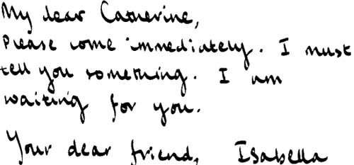
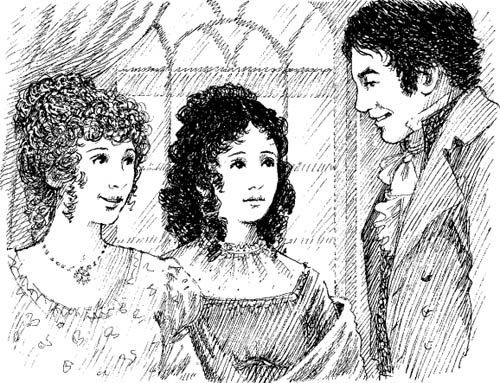
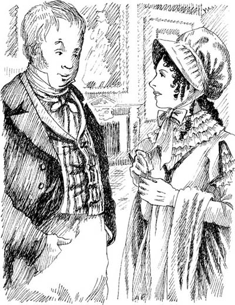

Listen to Part 1:

Isabella đang yêu
Thứ ba tuần sau, Catherine nhận được một lá thư từ Isabella.

Catherine tới toà nhà của Edgar. Isabella đang ăn sáng. Cô chạy đến bên Catherine. Cô ôm lấy người bạn và cười.
‘Anh trai yêu quý của em!’ Isabella nói. ‘Ồ, em rất vui mừng! Cha mẹ em sẽ nói gì? Họ có thích em không?’
‘Isabella thân mến!’ Catherine nói. ‘Em đang nói gì vậy? Em yêu James sao?’
‘Em yêu! Em yêu!’ Isabella nói. ‘Và James cũng yêu em. Anh ấy đã nói với em hôm qua. Em vô cùng, vô cùng hạnh phúc! Em luôn yêu anh ấy! Anh ấy đẹp trai và thông minh! Tại sao anh ấy lại chọn em? Em không hiểu được!’
‘Hôm nay James sẽ cưỡi ngựa đến nhà em ở Fullerton,’ Isabella nói. ‘Anh ấy sẽ nói chuyện với bố của em. Anh ấy sẽ nói cho cha mẹ em biết về em. Chúng em muốn kết hôn. Ông bà Morland sẽ đồng ý chứ?’
Listen to Part 2:
Ngay lúc đó, James bước vào phòng.
‘Bây giờ em biết mọi thứ rồi, Catherine!’ anh ấy nói. ‘Anh là một người đàn ông hạnh phúc. Isabella, anh sẽ rời khỏi Bath ngay bây giờ. Tối nay anh sẽ viết thư cho em.’
‘Vâng, đi đi, James yêu quý,’ Isabella nói. ‘Đi thật nhanh! Hãy nhanh chóng quay lại với em!’


Mấy ngày sau, James viết thư tới. Catherine đang ở với Isabella. Mọi chuyện đều tốt đẹp. Ông bà Morland rất vui. Họ đã đồng ý cho cuộc hôn nhân.
Isabella cười và khóc. ‘James và em sẽ sớm kết hôn,’ cô nói.
John Thorpe vẫn chưa quay trở lại Oxford. Anh ta đang đợi tin tức về Isabella. Isabella đã cho anh ta xem bức thư của James.
‘James Morland là người đàn ông tuyệt vời nhất trên đời!’ John Thorpe nói. ‘Em sẽ rất hạnh phúc.’
Bà Thorpe và Isabella muốn báo tin cho Maria và Anne. Họ rời khỏi phòng. John Thorpe ở lại một mình với Catherine.
Listen to Part 3:
‘Anh phải tạm biệt em, cô Morland,’ anh ta nói. ‘Hôm nay anh sẽ rời khỏi Bath.’
Anh ta đi lại quanh phòng. Rồi anh ta lại nói.
‘Em nghĩ gì về cuộc hôn nhân này? Đây là một ý kiến hay, phải không?’
‘Vâng, em nghĩ là hay,’ Catherine nói.
John Thorpe cười. ‘Anh biết một bài hát,’ anh ta nói. Anh ta hát vài câu – ‘Một đám cưới dẫn đến một đám cưới khác.’ Sau đó anh ta hỏi, ‘Em sẽ có mặt trong đám cưới của Isabella chứ?’
‘Vâng, em sẽ đến,’ Catherine trả lời.
‘Vậy chúng ta có thể cùng hát bài hát đó, cô Morland.’
Catherine không hiểu. ‘Nhưng em không hát được, anh Thorpe,’ cô nói. ‘Em phải đi rồi. Tạm biệt anh.’
‘Chờ một chút, cô Morland!’ John Thorpe nói. ‘Anh sẽ ở Oxford trong nhiều tuần. Nhưng anh muốn gặp lại em. Anh sẽ tới Fullerton.’
‘Thế thì gia đình em sẽ gặp anh ở Fullerton.’
Listen to Part 4:
‘Nhưng em có gặp anh không, cô Morland?’
‘Ồ, em sẽ ở Fullerton,’ Catherine nói.
‘Tốt,’ John Thorpe đáp. ‘Mọi đàn ông đều muốn có một người vợ xinh đẹp và một ngôi nhà lớn. Em có đồng ý không, cô Morland?’

‘Ồ vâng, anh Thorpe. Tạm biệt anh.’
Catherine rời khỏi phòng. John Thorpe mỉm cười.
‘Vâng,’ anh ta tự nhủ. ‘Cô Morland đang yêu tôi!’
Mục lục
- Trang bìa
- Trang bản quyền
- Mục lục
- Ghi chú về tác giả
- Ghi chú về câu chuyện này
- Những người trong câu chuyện này
- 1 Catherine đến Bath
- 2 Những người bạn mới của Catherine
- 3 John và James
- 4 Vũ hội tại Phòng Trên
- 5 'Tại sao anh lại nói dối em?'
- 6 Catherine và nhà Tilneys
- 7 Isabella đang yêu
- 8 Đội trưởng Frederick Tilney
- 9 Isabella và James
- 10 Trang viên Northanger
- 11 'Thưa Cô Morland!'
- 12 Chuyến thăm Woodston
- 13 Bức thư từ Isabella
- 14 Catherine về nhà
- 15 'Cô sẽ lấy tôi chứ?'